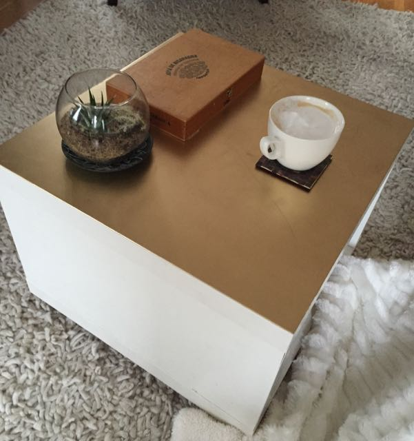

Lyza’s Index: September/October Rundown
The month has blurred by; let me capture some things before they float out of my head again!
- #life
- #til
The past month has been blurry, due, in part, to some health fun I’ll gloss over here. But before I’m off again (it’s travel season), I wanted to jot down a few highlights.
Tech
Responsive Field Day: Cloud Four’s first conference!
For Cloud Four staff, Responsive Field Day was a big ol’ deal, one of the bigger things about our 2015 so far. Everything I have to say about the quality of the talks, the community feel of the event, and the contributions of Cloud Four-ians is so laudatory that it doesn’t leave much else in my brain. Maybe that’s part of being so close to the planning and execution of it. Maybe I can’t see the proverbial forest for the trees. But, as well, all of the feedback I’ve received has been emphatically positive. So, I don’t know. It seemed, just…damned good.
It was the first event Cloud Four has put on, and the first event for which I was deeply involved in planning. I enjoyed the hell out of it.
You can find videos and podcast-ed audio of everything from the day, talks and panels, on the event’s web site.
Photo copyright 2015 Win Goodbody
Writings: On Service Workers and Progressive Enhancement
My column this month for A List Apart struck a nerve! On the good side, it’s kicked up some good conversation about how to get things done to make offline-first a reality, now. For example, David Walsh from Surge explains a tool for managinge App Cache more simply.
The Web is complex and fun and I hope we keep making it the best we can.
Non-tech
On British village names…
A habit I’ve had since I was about ten is poring over maps the way someone else might read novels. I was in Wales a few years ago, whiling away a country evening flipping through a British driving atlas when I started to obsess over how wonderful British village names can be. I’m going to save diving into this until later, because it absolutely deserves its own post, but the esteemed Chris Higgins used an early spreadsheet I made of some of the choice finds to inspire a recent article on Mental Floss.
On the domestic front…
Here’s proof that I can Pinterest with the rest of ‘em. I got bored with the scraped-up crappy melamine top of the rolling coffee table in the living room (Ikea, and how).
Before
Then
Sanding, priming, and gold spray paint.
After

You may have noticed I don’t have any commenting enabled...yet. Hit me up @lyzadanger with thoughts; maybe I’ll add commenting soon.